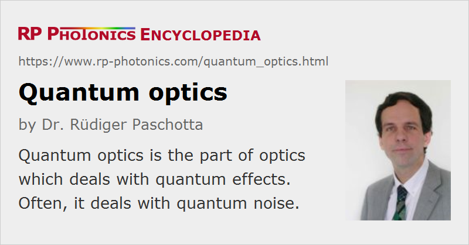

Quantum Optics
Definition: the part of optics which deals with quantum effects
More general term: optics
German: Quantenoptik
How to cite the article; suggest additional literature
Author: Dr. Rüdiger Paschotta
Quantum optics is the part of optics (the science and technology of light) which deals with quantum effects. In many cases, such effects are studied in the context of fundamental research. However, they are also very important in laser physics:
- Fundamental quantum-mechanical processes such as spontaneous and stimulated emission are of basic importance for the general operation and the performance of lasers.
- Quantum effects introduce laser noise, e.g. cause a finite linewidth and a finite level of intensity noise even if all technical noise sources are suppressed. Similarly, they set a lower limit to the amplifier noise of optical amplifiers.
Another area of quantum optics involves nonclassical light, such as squeezed states of light, having unusual quantum noise properties. This area is somewhat related to the topic of quantum nondemolition measurements, which make it possible, e.g., to determine the intensity of a light beam without altering it.
Quantum Technologies
Quantum optics has practical applications, e.g. quantum cryptography, which is the use of quantum effects for secure transmission of information, and quantum metrology. The applied fields are also called quantum photonics as a field within quantum technology. The following types of products are specific for those fields:
- single-photon emitters
- photon pair sources
- low-noise photodetectors, e.g. for photon counting
- optical traps
- systems for quantum cryptography including quantum key distribution
- parts for scientific research on quantum computing
Questions and Comments from Users
Here you can submit questions and comments. As far as they get accepted by the author, they will appear above this paragraph together with the author’s answer. The author will decide on acceptance based on certain criteria. Essentially, the issue must be of sufficiently broad interest.
Please do not enter personal data here; we would otherwise delete it soon. (See also our privacy declaration.) If you wish to receive personal feedback or consultancy from the author, please contact him e.g. via e-mail.
By submitting the information, you give your consent to the potential publication of your inputs on our website according to our rules. (If you later retract your consent, we will delete those inputs.) As your inputs are first reviewed by the author, they may be published with some delay.
Bibliography
| [1] | W. P. Schleich et al., Quantum Optics in Phase Space, Wiley-VCH Verlag GmbH, Weinheim (1999) |
| [2] | D. F. Walls and G. J. Milburn, Quantum Optics, Springer, Berlin (1994) |
| [3] | R. Loudon, The Quantum Theory of Light, 3rd edition, Oxford University Press, New York (2000) |
See also: quantum photonics, quantum noise, laser noise, amplifier noise, quantum cryptography, photonics
and other articles in the category quantum optics
|  |
If you like this page, please share the link with your friends and colleagues, e.g. via social media:
These sharing buttons are implemented in a privacy-friendly way!